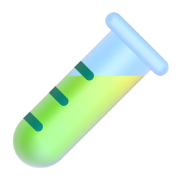

转 AI 产品后，
我做用研的方式
变了 3 件事
不止于 Skill  用研人的 AI 工作流升级
用研人的 AI 工作流升级
用研人的 AI 工作流升级以前：做访谈、写报告、讲 PPT，交付完就结束
现在：搭平台、做原型、报告自动更新
01
 SOP 产品化
MI 平台 + 需求库
SOP 产品化
MI 平台 + 需求库
SOP 产品化
MI 平台 + 需求库
02

动手搭原型 从洞察到 Prototype
03
 报告 HTML 化
搭一次，持续刷新
报告 HTML 化
搭一次，持续刷新
报告 HTML 化
搭一次，持续刷新